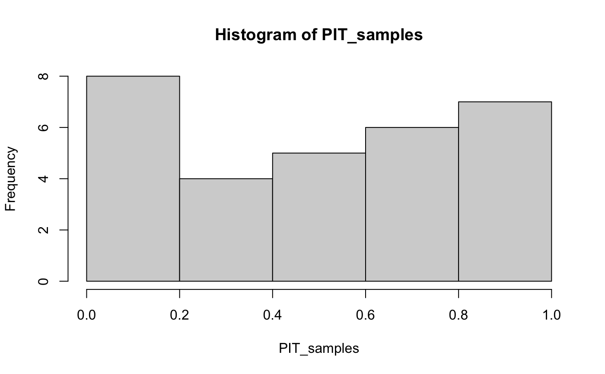
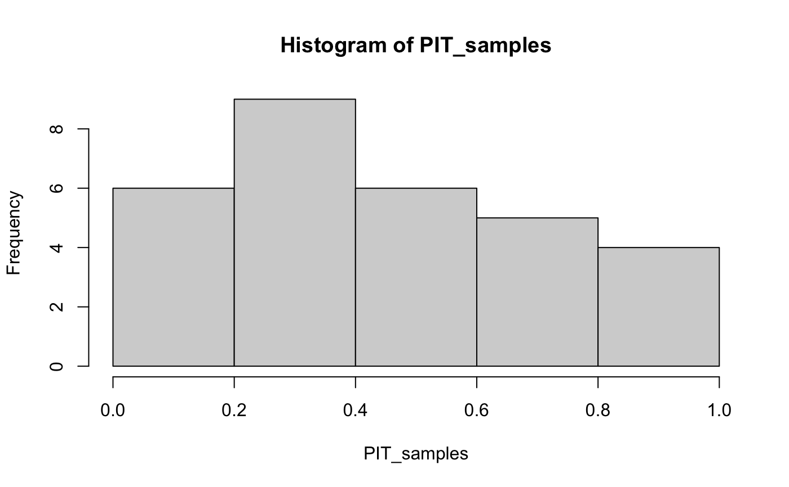
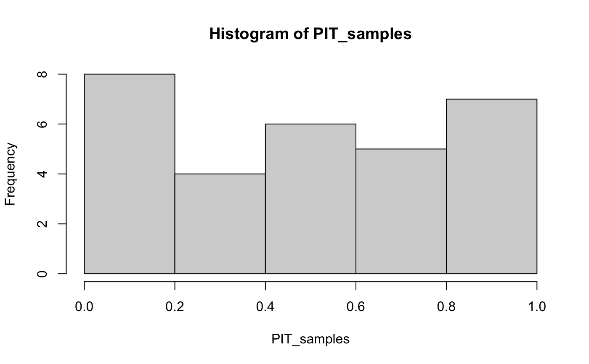
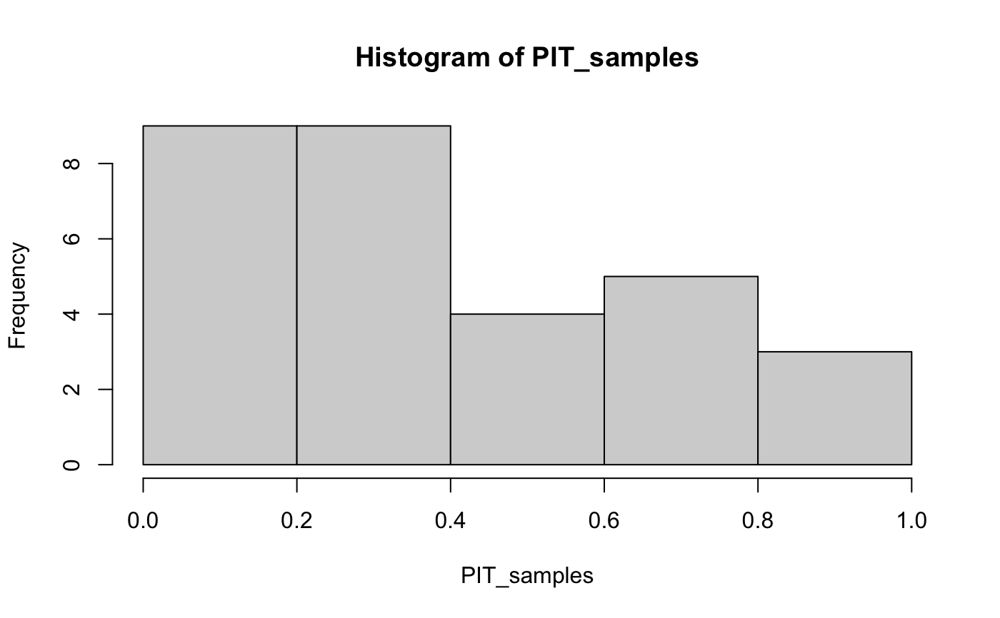

The function eval_forecasts is an easy to use wrapper
of the lower level functions in the scoringutils package.
It can be used to score probabilistic or quantile forecasts of
continuous, integer-valued or binary variables.
eval_forecasts( data, by = c("model"), summarised = TRUE, pit_arguments = list(plot = FALSE), interval_score_arguments = list() )
| data | A data.frame or data.table with the correct columns. Note: it is easiest to have a look at the example files provided in the package and in the examples below. Regardless of the forecast type,the following columns need to be present:
All forecasts except the quantile forecasts need a
For integer and continuous forecasts a
For quantile forecasts the data can either be provided in a long or in a wide format. The wide format needs columns with the quantile forecasts
The long format needs the following columns
|
|---|---|
| by | character vector of columns to group scoring by. The default
is |
| summarised | if |
| pit_arguments | pass down additional arguments to the |
| interval_score_arguments | pass down additional arguments to the
|
A data.table with appropriate scores. For binary predictions,
the Brier Score will be returned, for quantile predictions the interval
score. For integer forecasts, Sharpness, Bias, DSS, CRPS, LogS, and
pit_p_val (as an indicator of calibration) are returned. For integer
forecasts, pit_sd is returned (to account for the randomised PIT),
but no Log Score is returned (the internal estimation relies on a
kernel density estimate which is difficult for integer-valued forecasts).
If summarised = TRUE the average score per model is returned.
the following metrics are used where appropriate:
Interval Score for quantile forecasts. Smaller is better. See
interval_score for more information.
Brier Score for a probability forecast of a binary outcome.
Smaller is better. See brier_score for more information.
Bias 0 is good, 1 and -1 are bad.
See bias for more information.
Sharpness Smaller is better. See sharpness for more
information.
Calibration represented through the p-value of the
Anderson-Darling test for the uniformity of the Probability Integral
Transformation (PIT). For integer valued forecasts, this p-value also
has a standard deviation. Larger is better.
See pit for more information.
DSS Dawid-Sebastiani-Score. Smaller is better.
See dss for more information.
CRPS Continuous Ranked Probability Score. Smaller is better.
See crps for more information.
LogS Log Score. Smaller is better. Only for continuous forecasts.
See logs for more information.
Funk S, Camacho A, Kucharski AJ, Lowe R, Eggo RM, Edmunds WJ (2019) Assessing the performance of real-time epidemic forecasts: A case study of Ebola in the Western Area region of Sierra Leone, 2014-15. PLoS Comput Biol 15(2): e1006785. https://doi.org/10.1371/journal.pcbi.1006785
Nikos Bosse nikosbosse@gmail.com
## Probability Forecast for Binary Target binary_example <- data.table::setDT(scoringutils::binary_example_data) eval <- scoringutils::eval_forecasts(binary_example) eval <- scoringutils::eval_forecasts(binary_example, summarised = FALSE) ## Quantile Forecasts # wide format quantile_example <- data.table::setDT(scoringutils::quantile_example_data_wide) eval <- scoringutils::eval_forecasts(quantile_example, by = c("model", "horizon"), interval_score_arguments = list(weigh = TRUE)) eval <- scoringutils::eval_forecasts(quantile_example, summarised = FALSE) #long format eval <- scoringutils::eval_forecasts(scoringutils::quantile_example_data_long) ## Integer Forecasts integer_example <- data.table::setDT(scoringutils::integer_example_data) eval <- scoringutils::eval_forecasts(integer_example, by = c("model", "horizon"), pit_arguments = list(n_replicates = 30))#>#>## Continuous Forecasts continuous_example <- data.table::setDT(scoringutils::continuous_example_data) eval <- scoringutils::eval_forecasts(continuous_example, by = c("model", "horizon")) eval <- scoringutils::eval_forecasts(continuous_example, by = c("model", "horizon"), summarised = FALSE)